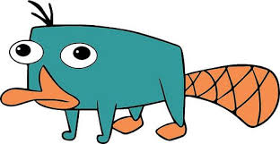

select any image and right click it, copy the image address, use img tag, remember that like meta, its not a closed tag

we can also give this image the height and width that we prefer

if we only write width and not height (vice versa) the other untyped side will adjust according to the original image's dimensions
we can also give an alt="" value, in the link i changed wikipedia to wikiledia and the address will not be found, so it will ust display the alt name and an image symbol

if the image already exists in our folder, then we can just write the file's name
if the image that we want to use is downloaded but in another file, we add "./images/normal_platypus.jpeg" the dot represents our folder
if we want our image to be an actual link, we create a tag, inside it we put our image! link behaves like a parent